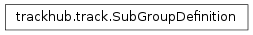

trackhub.SubGroupDefinition¶

-
class
trackhub.SubGroupDefinition(name, label, mapping, default='none')[source]¶ Bases:
objectRepresents a subgroup line in a composite track.
Instances of this class are provided to a composite track in order to define options for the subtracks’ groups.
Parameters: - name – String; name for the subgroup (e.g., “celltype”).
- label – String; the label that will be displayed (e.g., “Cell_Type”)
- mapping –
Dictionary of {tag: title}, where tag will be how subtracks access this group and title is how it will be displayed in the browser, e.g.:
{ "ES": "Embryonic stem cell", "MEF": "Mouse embryonic fibroblast" }
Upon appending this SubGroupDefinition to a composite track, the options for the subtracks’ subgroups are required to come from the keys in the mapping. Continuing the example, “celltype=ES” would be a valid subgroup for a subtrack, but “celltype=other” would not since it’s not in the mapping dict above.
- default – String; value to be used by subtracks if they don’t explicitly define this subgroup. Continuing the example, if a subtrack didn’t specify the “celltype” subgroup, then by default a “celltype=none” value will be added. This is necessary because subtracks must define a value for all groups.
Methods
-
__init__(name, label, mapping, default='none')[source]¶ Represents a subgroup line in a composite track.
Instances of this class are provided to a composite track in order to define options for the subtracks’ groups.
Parameters: - name – String; name for the subgroup (e.g., “celltype”).
- label – String; the label that will be displayed (e.g., “Cell_Type”)
- mapping –
Dictionary of {tag: title}, where tag will be how subtracks access this group and title is how it will be displayed in the browser, e.g.:
{ "ES": "Embryonic stem cell", "MEF": "Mouse embryonic fibroblast" }
Upon appending this SubGroupDefinition to a composite track, the options for the subtracks’ subgroups are required to come from the keys in the mapping. Continuing the example, “celltype=ES” would be a valid subgroup for a subtrack, but “celltype=other” would not since it’s not in the mapping dict above.
- default – String; value to be used by subtracks if they don’t explicitly define this subgroup. Continuing the example, if a subtrack didn’t specify the “celltype” subgroup, then by default a “celltype=none” value will be added. This is necessary because subtracks must define a value for all groups.